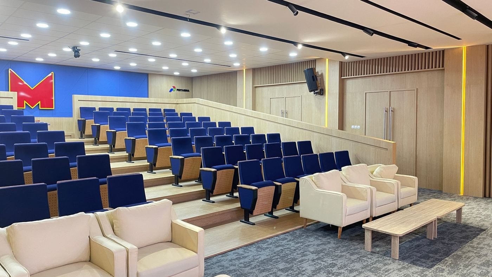

Menata Kursi Auditorium Berundak: Pandangan, Lorong, dan Pemasangan

Lantai berundak membuat setiap baris duduk sedikit lebih tinggi dari baris di depannya, sehingga pandangan ke panggung lebih baik. Tata letaknya perlu direncanakan sejak awal.
Berikut hal-hal yang perlu Anda perhatikan sebelum menentukan jumlah dan susunan kursi.
Cara Merawat Kursi Auditorium Agar Awet dan Tetap Rapi
1. Pandangan ke Depan
Keuntungan utama lantai berundak adalah peserta di baris belakang tetap dapat melihat panggung dan layar. Karena itu, tinggi undakan dan posisi layar perlu dibahas bersama sebelum jumlah kursi ditentukan.
2. Lorong dan Jalur Keluar
Rencanakan lorong tengah dan lorong samping agar peserta mudah naik turun. Jalur keluar harus mengikuti ketentuan keselamatan bangunan yang berlaku di daerah Anda, jadi konsultasikan dengan kontraktor atau pihak yang berwenang.
3. Pemasangan dan Jarak Antar Baris
Pada ruang berundak, kursi umumnya dipasang tetap pada lantai di setiap undakan. Pastikan lebar dan kedalaman undakan sesuai dengan ukuran kursi dan jarak antar baris yang Anda inginkan.
Jarak antar baris menentukan kenyamanan keluar-masuk tempat duduk. Dudukan lipat memberi ruang lewat lebih lega saat tidak diduduki, sehingga cocok untuk undakan yang tidak terlalu dalam.
4. Tips Sebelum Memesan
Supaya tidak perlu kompromi di belakang, cek hal-hal ini:
- Tentukan model kursi sebelum undakan dibangun, supaya ukuran undakan sesuai dengan kursi.
- Koordinasikan dengan pekerjaan sipil, karena menyesuaikan kursi setelah undakan selesai lebih sulit.
- Siapkan denah atau ukuran ruangan untuk konsultasi.
Sedang mencari kursi auditorium untuk kebutuhan ruangan Anda? Cahaya Mustika Internesia siap membantu Anda menemukan kursi auditorium Zeco yang sesuai.
Hubungi customer service kami untuk konsultasi gratis mengenai pilihan model, ukuran, bahan, dan harga. Kami siap membantu Anda memilih kursi sesuai kebutuhan.
PT Cahaya Mustika InternesiaJl. Penjernihan II No.7, Bend. Hilir, Tanah Abang, Jakarta Pusat 10210 · Admin: +62 811-330-1819
Wujudkan Auditorium yang Nyaman dengan Kursi yang Tepat
Ceritakan ukuran ruangan dan kebutuhan acara Anda. Kami bantu memilihkan model kursi auditorium Zeco yang sesuai dengan kebutuhan dan anggaran Anda.